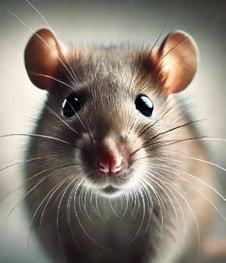
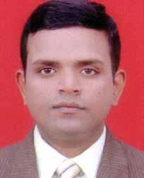
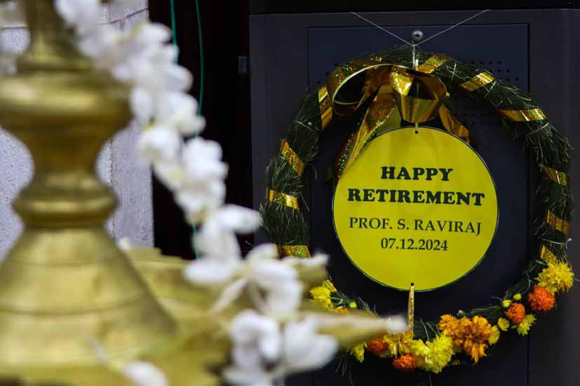
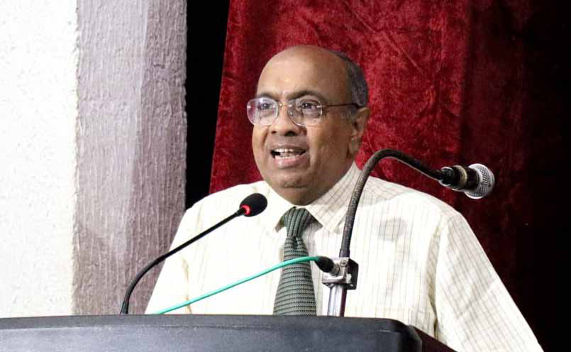
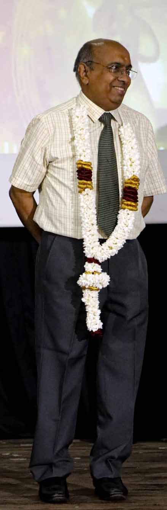
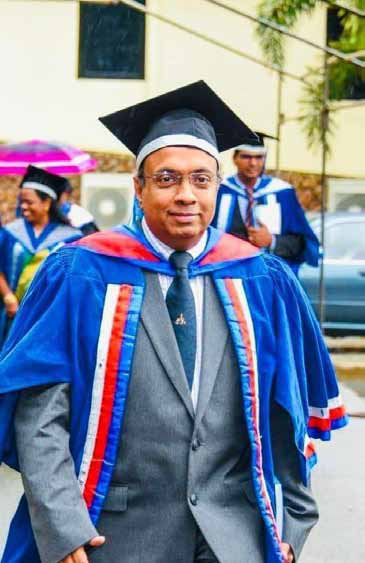
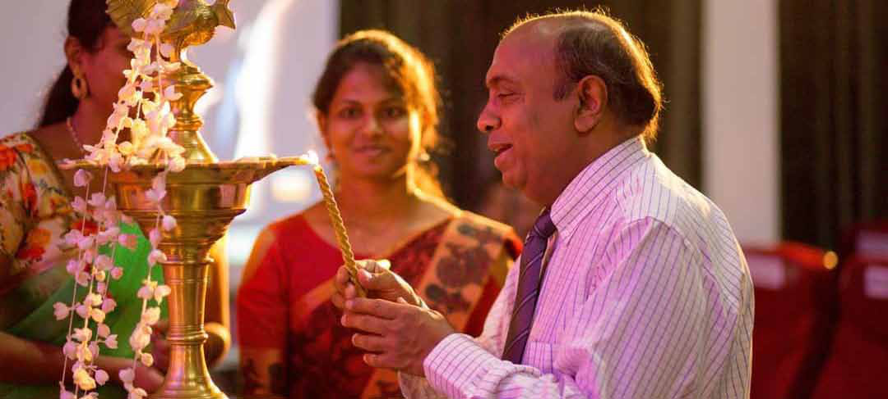
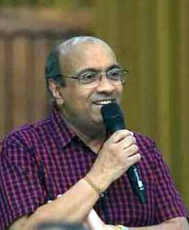

Why is Leptospirosis famously called "Rat Fever"? Are rats the real villains here?
Why is Leptospirosis famously called "Rat Fever"? Are rats the real villains here?
Jaffna Monitor hellojaffnamonitor@gmail.com 9 caused by Cyclone Pengal, our house in the Vadamarachchi region was partially submerged. Soon after the floodwaters receded, my father began feeling unwell. Initially, it seemed like a regular fever, but he later developed a high fever, chills, and severe body pain. When the symptoms persisted and his condition worsened, we took him to the local clinic. The doctors prescribed antibiotics, but his condition deteriorated rapidly. By the time we rushed him to the Point Pedro Base Hospital, it was too late," he recounted. Health authorities are continuing their efforts to raise awareness about the disease while ensuring adequate medical support in affected areas. Residents are encouraged to remain vigilant and comply with health guidelines to curb the spread of the illness. Specialist Highlights Preventive Measures for Leptospirosis Dr. Pirasath Selladurai, a Specialist Physician in Internal Medicine at the Base Hospital in Manthikai, where a significant number of Leptospirosis (rat fever) patients are currently admitted, has shared crucial preventive measures to address the ongoing outbreak in Jaffna. In a social media post, Dr. Selladurai emphasized the importance of community awareness and individual precautions in combating the spread of the disease. The nickname "Rat Fever" sticks because rats are the primary culprits in spreading the Leptospira bacteria. These sneaky rodents carry the bacteria in their urine, contaminating water, soil, and sometimes even food. Humans, unfortunately, get caught in the crossfire when they wade into floodwaters, handle soil, or even drink untreated water unknowingly laced with this bacterial hitchhiker. But are rats the only villains? Not really! While they're the poster creatures for the disease, other animals like cattle, dogs, and pigs can also play a role. However, because rats are so ubiquitous, particularly in urban and flood-prone areas, they've taken the spotlight in the "Rat Fever" story. Why is Leptospirosis famously called "Rat Fever"? Are rats the real villains here?


Jaffna Monitor hellojaffnamonitor@gmail.com 10 Leptospirosis, a bacterial infection commonly transmitted through water contaminated by animal urine, can lead to severe symptoms, including high fever and respiratory complications. Dr. Pirasath Selladurai outlined the following preventive measures to reduce the risk of infection: Avoid Contaminated Water: Refrain from swimming, wading, or bathing in potentially contaminated water, especially after heavy rainfall, floods, or hurricanes. Do not ingest floodwater under any circumstances. Treat Drinking Water: Ensure drinking water is safe by boiling it or using approved chemical treatments. Protect Open Wounds: Cover any cuts or abrasions on the skin with waterproof bandages to prevent exposure to contaminated water. Use Protective Gear: Wear waterproof clothing, gloves, and closed shoes or boots when handling water or soil that might be contaminated. Control Rodents: Store food, water, and waste in sealed containers to deter rodents. Use traps to manage their population. Avoid Direct Contact with Infected Animals: Do not handle dead animals directly, and wash hands thoroughly if contact occurs. Limit interactions with animals that could potentially carry the disease. Consider Preventive Medication: In areas where Leptospirosis is endemic, consult healthcare professionals about prophylactic medication. Dr. Selladurai also encouraged residents to seek guidance from local Medical Officers of Health (MOH) or Public Health Inspectors (PHI) for additional information and support.

Jaffna Monitor hellojaffnamonitor@gmail.com 11 Commitment is Everything: Exclusive Interview with Jaffna's Renowned Surgeon Dr. S. Raviraj J affna's household surgeon, Dr. S. Raviraj, recently retired after over 40 years of dedicated service to the region. In many ways, he is a true hero to the people of Jaffna and an inspiration to his fellow doctors. During one of the darkest periods in Sri Lanka's history, as the civil war raged and uncertainty forced many to leave Jaffna in search of safety and stability, Dr. Raviraj made the extraordinary decision to return to Jaffna after completing his MD abroad, sacrificing BY: Our Special Correspondent INTERVIEW

Jaffna Monitor hellojaffnamonitor@gmail.com 12 personal wealth and comfort. His unwavering commitment to serving the people of Jaffna during such immense challenges has left an indelible mark on the region's healthcare system. With over 25 years as a surgeon and 40 years of dedicated service in Jaffna, Dr. Raviraj has witnessed and endured the horrors of war, including the infamous Jaffna Hospital massacre by the Indian Peacekeeping Force (IPKF), from which he miraculously escaped. Throughout his career, he has been instrumental in transforming the medical landscape of Jaffna, earning widespread recognition as the driving force behind the region's modern surgical system. Dr. Raviraj's contributions extend far beyond his role as a physician and surgeon. He has mentored and trained hundreds of surgeons, physicians, and healthcare professionals, many of whom now serve across Sri Lanka and internationally. Data shows that the number of doctors in Jaffna pursuing surgery for their MD increased significantly after Dr. Raviraj returned to Jaffna as a surgeon. His legacy is such that in almost every family in Jaffna, at least one member has been treated by him. He also served as the Director of Jaffna Hospital during one of its most critical periods, from 2005 to 2012. His leadership during crises was unparalleled, exemplified by his selfless act of personally delivering food to patients during a devastating flood, even as human waste flowed through the inundated hospital premises. Such acts of dedication and compassion have cemented his status as a true hero in the eyes of the people. This is our exclusive interview with Dr. Raviraj. Your decision to return to Jaffna after completing your MS in Surgery and overseas training is widely regarded as an act of selflessness, particularly

Jaffna Monitor hellojaffnamonitor@gmail.com 13 as it occurred during a time when the war was at its peak and uncertainty drove many professionals to leave the region in search of safety and stability. What inspired you to make such a courageous choice during such a turbulent period? It is a well-established and mandatory path for doctors to pursue advanced training overseas as part of their postgraduate education. After earning my MS in Surgery around 2000, I embarked on this journey, undergoing training in Australia and Singapore. However, my commitment to returning to Jaffna and serving my people remained unwavering. War or no war, Sri Lanka is my birthplace, and regardless of the challenges—come hell or high water—I was determined to return and contribute to the place and people who shaped me. You were the first surgical registrar produced by the Jaffna Medical Faculty. Could you tell me about your medical student days? I entered the Faculty of Medicine at the University of Jaffna in 1979 as a member of the second batch of students. I studied surgery under Prof. Karunainathan, Prof. Vetpillai, and Prof. Sriskanthavarman; medicine under Dr. Mrs. Ganeshamoorthy, Dr. Sriharan, Dr. Nageshwaran, and Dr. Ranja Thayalan; obstetrics and gynecology under Prof. Sivasooriya and Prof. Thayalasekaran; and pediatrics under Prof. Ramadas and Dr. Vamadevan. I remain forever grateful to my teachers. I graduated in 1984. In 1985, I completed my internship at Jaffna Teaching Hospital, working under Surgeon Dr. Ponnambalam and Physician Dr. James, both of whom were exceptional mentors and guides. Dr. Ponnambalam, in particular, nurtured my profound interest in surgery and was one of the key reasons I chose surgery and eventually became a surgeon. After completing my internship, I was offered a post-internship opportunity to work under Professor A. H. Sheriffdeen in Colombo, a highly skilled and renowned surgeon. He selected me to work as a departmental registrar, a position that allowed professors to personally choose one or two doctors for specialized training in their departments—a role that no longer exists today. Professor Sheriffdeen invited me to Colombo, but at the time, Jaffna Teaching Hospital was grappling with a severe staff shortage. Dr. Nachinarkiniyan, the Director of Jaffna Hospital, expressed his concerns, saying, "If all of you leave, we won't be able to manage the hospital." Additionally, my mentor, Dr.Ganesaratnam, whom I deeply respected, strongly wished for me to remain in Jaffna. As a result, I decided to stay, where I worked as a Senior House Officer (SHO) for six years. After passing the MD Part 1 exam, I was again offered the opportunity to work as a registrar under Professor N. Jayasekara. However, during this time, Dr. Kanesaratnam, an eminent surgeon and my mentor, was working alone at Jaffna Teaching Hospital. He was managing four units and eight wards single-handedly. He personally requested me to return to Jaffna, stating that my assistance would be invaluable. He even reached out to the postgraduate institution to facilitate this transition. I could not refuse his invitation. I am also deeply thankful to Dr. Ganesaratnam for another reason. Traveling to Colombo during that period was extremely challenging.
Jaffna Monitor hellojaffnamonitor@gmail.com 14 When I first attempted the MD Part 1 exam, I needed to travel to Colombo to take the test, but a few times, I couldn't make it past Elephant Pass due to the war. During that time, Dr. Ganesaratnam advised me and a few other candidates working under him to stay in Colombo to complete the exam. Thanks to his support and encouragement, I finally stayed in Colombo, took the exam, and passed. In those days, communication was extremely limited. There were no telephone facilities or telegrams, and the Northern Province was completely isolated. Even exam results were not immediately available; it often took about a month for us to receive the results after they were released. The Jaffna Hospital massacre by the Indian Peacekeeping Forces occurred while you were working there. You were one of the survivors and lived to recount the tale of that horrendous act by the Indian troops. Could you share your experience? Yes, it was an unimaginably harrowing experience. The massacre occurred on October 21, 1987, coinciding with Deepavali Day. On that tragic day, the Indian Peacekeeping Force, which had arrived with a mandate to assist us, turned their weapons against us in an act of sheer brutality. All the doctors on duty that day were inside the hospital. The Indian military had surrounded the premises, trapping all healthcare workers within. When the Indian army stormed the hospital, they began shooting indiscriminately. Many lives were lost in the chaos, including my mentor, Dr. Sivapathasundaram, Dr. Ganesamoorthy, and several others. Miraculously, a few of us survived. Just before the Indian army entered the hospital premises, Dr. Ponnambalam had gathered a group of us and

Jaffna Monitor hellojaffnamonitor@gmail.com 15 instructed us to prepare the operating theater. As we were on our way to the surgical theater, the gunfire erupted. Initially, hearing the loud explosions, I mistook them for the customary firecrackers of Deepavali. However, the relentless roar of bombs quickly shattered that illusion, revealing the horrifying reality. Not just us, but others who were in the doctors' restrooms also managed to escape unharmed. Tragically, around 70 individuals— including doctors, nurses, patients, and staff— who were in the administrative building were mercilessly killed. Was there an attack on the Indian army from within the hospital premises by the LTTE? I cannot say for certain. We were told that the LTTE launched an attack from near the hospital wall, but no attacks originated from within the hospital buildings themselves. Even if that were true, it does not justify the horror that followed. Was this incident one of the primary reasons for the mass exodus of doctors from Jaffna to foreign countries? This incident may well have been a contributing factor, but the exodus of doctors from Jaffna had already begun before it unfolded. For years, doctors in the region were severely affected by the ongoing war, enduring relentless shelling, aerial bombings, and shootings. Many felt they could no longer ensure their own safety or that of their families, prompting them to leave. The massacre at Jaffna Hospital only intensified the fear and uncertainty, further compelling doctors to seek refuge and opportunities abroad. It wasn't just doctors— during that time, a significant portion of Jaffna's population sought to leave the region due to the overwhelming sense of insecurity and instability. You are credited with shaping the modern Jaffna surgical system. What was the medical situation like when you returned to Jaffna after completing your foreign training? I returned to Jaffna Hospital in 1997 as an acting surgeon and later became a permanent surgeon after completing my overseas training. At that time, while healthcare technology was advancing globally, less than 20% of that progress had reached Jaffna. We struggled with even the most basic necessities—something as simple as taking an X-ray was often a significant challenge. The number of doctors was alarmingly low. At one point, there were only three or four medical specialists in Jaffna Hospital. Compare that to today, where we have over 100 specialists, and you can imagine the scale of hardship we faced back then. This situation was further exacerbated by the severe shortage of Senior House Officers (SHOs), House Officers (HOs), nurses, and other health workers. The workload was immense, but it was also a time of resilience and perseverance. Despite these difficulties, we take immense pride in knowing that we laid the foundation for the healthcare system that Jaffna enjoys today. What challenges did you face as a doctor and surgeon during wartime? We knew that Sri Lankan Tamils were very innovative during
Jaffna Monitor hellojaffnamonitor@gmail.com 16 the war, like running motorbikes on kerosene and using bicycle dynamos to watch TV. The challenges we faced were immense and multifaceted. The biggest issue was the lack of basic diagnostic facilities in Jaffna. We couldn't perform critical blood tests locally. For this, we relied on the International Committee of the Red Cross (ICRC), which transported blood samples to Colombo via their boats for analysis. This process naturally took time, often days. To this day, I am immensely grateful to the ICRC for their support during those difficult times. One of the most significant challenges was the inability to conduct biopsies in Jaffna. For instance, if we suspected a woman had breast cancer, the standard procedure would be to take a sample of the lump (biopsy) and send it for pathological analysis to confirm the diagnosis. Unfortunately, we had neither a pathologist nor the facilities to even prepare pathology slides in Jaffna. Without access to basic blood tests and biopsies, advanced diagnostic tools like MRI and CT scans were, of course, out of reach. When absolutely necessary, we had to send patients to Colombo for MRI or CT scans. In cases where we strongly suspected cancers, such as breast or neck cancers, we had to make tough decisions. Given that biopsy results from Colombo could take a month or more to arrive, I could not risk delaying treatment when the cancer might spread further during that time. After thorough clinical examination and discussions with the patients, I performed surgeries based on clinical judgment alone, without waiting for biopsy results. For example, I conducted approximately 60 breast cancer surgeries under such circumstances. These surgeries were performed after explaining the risks and obtaining the patients' consent. Remarkably, out of those 60 cases, only one turned out to be tuberculosis of the breast instead of cancer, while all others were confirmed cancer cases when the biopsy results eventually arrived. This experience underscored for me the irreplaceable value of clinical expertise and judgment, especially in resource-limited settings. While these actions may deviate from standard protocols, they were guided by humanity and the urgent need to save lives. What other challenges and innovations did you experience? One critical issue was the scarcity of anesthetic agents. We often relied on ketamine, which induces a state of dissociative anesthesia, allowing patients to undergo surgery with reduced consciousness and pain. This was far from ideal but was a practical solution given the circumstances. We also faced severe shortages of oxygen. For non-critical surgeries, we used oxygen concentrators, which extract and concentrate oxygen from the ambient air. While not entirely reliable, this method allowed us to perform surgeries in dire situations. Another challenge was the lack of appropriate surgical sutures. Different types of surgeries require specific sutures, but when we faced shortages, we adapted by using whatever was available, even if it was not ideal for that particular procedure. Finally, blood scarcity was a constant issue. To overcome this, doctors, nurses, and other medical staff regularly donated blood to keep the supply going.
Jaffna Monitor hellojaffnamonitor@gmail.com 17 The data shows that after you returned to Jaffna as a surgeon, the number of doctors who pursued surgery as their postgraduate specialty increased significantly. When I spoke with some of them, they mentioned that they chose surgery because of your influence. How did you inspire them? I simply encouraged them and instilled in them a strong sense of commitment to their work. There's something profound about the commitment we bring to our profession, and I believe I passed that on to my students. For instance, when we worked hard and managed to save a patient's life, the heartfelt gratitude from the patient was a surreal and deeply fulfilling experience. I wanted my students to feel that same sense of purpose and satisfaction. At the same time, I was quite strict with my students when it came to their duties. I ensured they worked hard by setting an example myself. I firmly believe that leadership in the operating room begins with the surgeon. I encouraged them to immerse themselves in surgery by actively engaging with key foundational subjects like anatomy, pathology, and physiology. Anatomy plays a critical role in surgery, so I made sure my students taught anatomy to medical undergraduates. Teaching reinforced their understanding and made them intimately familiar with the human body, which naturally sparked their interest in surgery. Similarly, I emphasized the importance of pathology and physiology, encouraging them to work in relevant wards to deepen their knowledge. I also actively involved my students in surgeries, letting them assist and co-work with me. I didn't fully delegate surgeries to them but instead assigned them specific responsibilities within a procedure. This allowed them to feel a sense of ownership and active participation in the surgery. After thorough training, I entrusted them with intermediate and minor surgeries, which further bolstered their confidence and sense of belonging to the field of surgery. Beyond the operating room, we arranged regular lecture sessions and discussion forums for our students. Despite the limited internet access at the time, we managed to connect with counterparts in Colombo for collaborative discussions. These efforts enriched their knowledge and broadened their exposure. Today, many of my students are working

Jaffna Monitor hellojaffnamonitor@gmail.com 18 as surgeons and physicians, and I feel immense pride and happiness seeing their accomplishments. Approximately how many of your students are surgeons and physicians now? It's difficult to calculate precisely, but I can confidently say hundreds of them are practicing surgeons and physicians today. The medical professionals we spoke to say you were instrumental in making the medical field in Jaffna more efficient. What did you actually do? I believe my contribution was small—it has always been a team effort involving everyone. My role was to encourage and inspire those around me. Thankfully, I have been blessed with a certain wisdom, which I attribute to God. For me, sincerity, honesty, punctuality, and, above all, commitment are paramount. I would especially like to emphasize the importance of commitment, as it forms the foundation for everything. When we lead with commitment—whether it's in our work, teaching, or patient care—it naturally inspires others to follow and respect us. Why do you think there is a negative public perception of doctors and the medical field despite the vast majority of Jaffna doctors being committed and not money-minded? This is a very complex and sensitive question, but I'll do my best to address it based on my observations. One of the primary reasons for negative perceptions is people's expectations. When a patient visits a doctor, they often expect to be completely cured without any complications or setbacks. This is not something I blame them for, nor do I see it as a fault—it is simply human nature. However, I believe this tendency is slightly more pronounced in Sri Lankan Tamil society. There is always a delicate balance between people's expectations and the services we provide. Even when we give 100% effort and dedication, there are situations that are beyond our control. Not all outcomes are within our power. That said, I also acknowledge that mistakes have occurred on the part of some doctors, nurses, and medical staff. No one is perfect, and errors can happen in any field. To address this, we must strengthen our public relations and interactions with patients. In my experience, 90% of patients' perception of their care depends on how they are treated—not just medically, but personally. Unfortunately, not all doctors excel in this area, and this can contribute to negative perceptions. To overcome these challenges, we need to focus on building trust and empathy with patients. Effective communication, transparency, and a compassionate approach can go a long way in bridging the gap between expectations and reality. I believe that by doing so, we can ultimately reduce negative perceptions of the medical field. Do you think, as some claim on social media, that Jaffna doctors are greedy or work purely for money? I wouldn't agree with that claim. The reality is
Jaffna Monitor hellojaffnamonitor@gmail.com 19 that living solely on a government salary has become nearly impossible due to the soaring cost of living. Like everyone else, doctors also face financial challenges. As long as they earn money through government-approved private practices, there is nothing inherently wrong. Private practice, when conducted ethically and with a focus on the patient's well-being, is a legitimate way for doctors to support themselves. That said, private practice must always be carried out responsibly, with integrity, and with the awareness of not imposing undue financial burdens on patients. If anyone were to misuse private practice, I would consider it a grave mistake. However, the majority of doctors operate with a strong conscience and dedication to their profession. At the same time, I'd like to address the narratives on social media. Social media often tends to focus disproportionately on the negative aspects of the medical profession while neglecting the positive contributions of doctors. This one-sided portrayal shapes public perception and can create undue hostility toward medical professionals. I'm not asking social media users or content creators to glorify us; I request that they present a balanced and truthful narrative, highlighting both the challenges and the progress in the field. For example, when facilities at Chavakachcheri Hospital were closed, social media was quick to highlight the issue, which was constructive criticism and helped bring attention to the problem. However, now that the hospital's facilities have reopened and are functioning smoothly, there hasn't been the same level of acknowledgment or coverage of this positive development. This selective focus on negativity contributes to an unfair perception of the medical field. Would this unwarranted criticism leveled upon doctors hurt genuine doctors who gave up the chance to have a lucrative life in foreign countries and chose to return to Sri Lanka? Absolutely, such criticism can be deeply disheartening for dedicated doctors who have chosen to serve in Sri Lanka despite more lucrative opportunities abroad. Facing continuous harassment on social media, coupled with financial challenges and the recent economic turmoil, can lead these

Jaffna Monitor hellojaffnamonitor@gmail.com 20 professionals to reconsider their decision to stay. In recent years, Sri Lanka has experienced a significant exodus of healthcare professionals. According to the Government Medical Officers' Association (GMOA), over 1,700 doctors have left the country in the past two years, primarily due to economic reasons. This migration is wider than doctors; nurses and other medical staff have also sought opportunities abroad, exacerbating staff shortages and straining the healthcare system. Constructive criticism is essential for growth and improvement. However, persistent negative portrayals without acknowledgment of the challenges faced by medical professionals can be demoralizing. You mentioned the challenges faced by the healthcare system. What steps are being taken to address these issues in the Northern Province? I'm glad you asked. We are currently working towards building a robust and future-ready healthcare system in the Northern Province. Recently, we had a constructive discussion with the Governor of the Northern Province, Mr. Vethanayagan. He is a very cooperative and supportive leader, and he has promised to assist us in this endeavor. We are also in talks with the Ministry of Health to align our plans with national healthcare goals. We aim to improve healthcare infrastructure and services across the Northern Province and set a benchmark for other provinces. We aspire to create a healthcare system that is efficient, accessible, and exemplary—a model for how healthcare can function across all regions of Sri Lanka. We are still in the planning and discussion stages. However, I can confidently say that this initiative is a step towards transforming the Northern Province into a region where quality healthcare is a fundamental right, accessible to everyone, regardless of where they live. You mentioned plans for developing the healthcare system in the Northern Province. What specific measures do you believe are necessary to ensure its success? In my opinion, before focusing on constructing new buildings, we should prioritize ensuring that the existing buildings function at their full capacity. Currently, a few healthcare-related buildings in the Northern Province have been constructed but are not operating as intended. It's essential to thoroughly investigate why these facilities are underutilized or non-functional and take the necessary corrective actions.

Jaffna Monitor hellojaffnamonitor@gmail.com 21 For the future, it is not enough to simply build structures. Every new building must come equipped with the required workforce, equipment, and operational plans. Constructing buildings without considering these essential elements leads to wasted resources and inefficiency. A healthcare facility is only as effective as the people and tools within it. Our focus should be on creating comprehensive and sustainable solutions, ensuring that each facility—whether new or existing—meets the healthcare needs of the population effectively. This approach will not only optimize resource utilization but also lay the foundation for a healthcare system that can truly serve as a model for other regions. You mentioned the shortage of doctors in Sri Lanka. At the same time, millions of dollars are leaving the country as students pursue private medical education abroad due to the lack of private medical universities in Sri Lanka. Any attempt to establish private medical colleges here has faced significant opposition. What are your thoughts on this issue? This is indeed a pressing issue. Sri Lanka should allow private medical colleges, provided they adhere to strict regulations and maintain the highest standards of education. There is no harm in offering private medical education locally. For instance, students who study international curriculums like the London A-Levels in Sri Lanka often find themselves excluded from the local university system. Why not provide them with the opportunity to pursue medical education within the country instead of forcing them abroad? The issue with some of the previous attempts to establish private medical universities in Sri Lanka was the lack of proper groundwork. To establish a legitimate medical university, it is essential to meet specific requirements, including: Regulatory Approvals: Obtaining proper authorization from the University Grants Commission (UGC), Sri Lanka Medical Council (SLMC), and the Ministry of Health to ensure compliance with national and international standards. Infrastructure and Resources: Building well-equipped facilities, including teaching hospitals, laboratories, and classrooms, and ensuring the availability of qualified faculty and support staff. Quality Assurance: Implementing rigorous accreditation processes and maintaining consistent quality in education and training. The challenges faced by earlier initiatives stemmed from the failure to adhere to these principles. When basic standards are compromised, it inevitably leads to public mistrust and opposition. To address the shortage of doctors, the government could also consider increasing the intake of students at existing medical faculties or establishing new public medical faculties. However, to curb the significant outflow of money from the country, allowing well- regulated private medical colleges is a logical and necessary step.